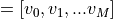

Engineering Economics
|
Compute the future value. |
|
Compute the payment against loan principal plus interest. |
|
Compute the number of periodic payments. |
|
Compute the interest portion of a payment. |
|
Compute the payment against loan principal. |
|
Compute the present value. |
|
Compute the rate of interest per period. |
|
Return the Internal Rate of Return (IRR). |
|
Returns the NPV (Net Present Value) of a cash flow series. |
|
Modified internal rate of return. |
|
Calculate the straight-line depreciation of an asset over time. |
Discounted Cash Flows
Future (FV)
- syse.fv(rate, nper, pmt, pv, when='end')
Compute the future value.
- Given:
a present value, pv
an interest rate compounded once per period, of which there are
nper total
a (fixed) payment, pmt, paid either
at the beginning (when = {‘begin’, 1}) or the end (when = {‘end’, 0}) of each period
- Returns:
the value at the end of the nper periods
- Parameters:
rate (scalar or array_like of shape(M, )) – Rate of interest as decimal (not per cent) per period
nper (scalar or array_like of shape(M, )) – Number of compounding periods
pmt (scalar or array_like of shape(M, )) – Payment
pv (scalar or array_like of shape(M, )) – Present value
when ({{'begin', 1}, {'end', 0}}, {string, int}, optional) – When payments are due (‘begin’ (1) or ‘end’ (0)). Defaults to {‘end’, 0}.
- Returns:
out – Future values. If all input is scalar, returns a scalar float. If any input is array_like, returns future values for each input element. If multiple inputs are array_like, they all must have the same shape.
- Return type:
ndarray
Notes
The future value is computed by solving the equation:
fv + pv*(1+rate)**nper + pmt*(1 + rate*when)/rate*((1 + rate)**nper - 1) == 0
or, when
rate == 0:fv + pv + pmt * nper == 0
References
[WRW]Wheeler, D. A., E. Rathke, and R. Weir (Eds.) (2009, May). Open Document Format for Office Applications (OpenDocument)v1.2, Part 2: Recalculated Formula (OpenFormula) Format - Annotated Version, Pre-Draft 12. Organization for the Advancement of Structured Information Standards (OASIS). Billerica, MA, USA. [ODT Document]. Available: http://www.oasis-open.org/committees/documents.php?wg_abbrev=office-formula OpenDocument-formula-20090508.odt
Examples
>>> import numpy as np >>> import syse as syse
What is the future value after 10 years of saving $100 now, with an additional monthly savings of $100. Assume the interest rate is 5% (annually) compounded monthly?
>>> syse.fv(0.05/12, 10*12, -100, -100) 15692.928894335748
By convention, the negative sign represents cash flow out (i.e. money not available today). Thus, saving $100 a month at 5% annual interest leads to $15,692.93 available to spend in 10 years.
If any input is array_like, returns an array of equal shape. Let’s compare different interest rates from the example above.
>>> a = np.array((0.05, 0.06, 0.07))/12 >>> syse.fv(a, 10*12, -100, -100) array([ 15692.92889434, 16569.87435405, 17509.44688102]) # may vary
Payment (PMT)
- syse.pmt(rate, nper, pv, fv=0, when='end')
Compute the payment against loan principal plus interest.
- Given:
a present value, pv (e.g., an amount borrowed)
a future value, fv (e.g., 0)
an interest rate compounded once per period, of which there are
nper total
and (optional) specification of whether payment is made at the beginning (when = {‘begin’, 1}) or the end (when = {‘end’, 0}) of each period
- Returns:
the (fixed) periodic payment.
- Parameters:
rate (array_like) – Rate of interest (per period)
nper (array_like) – Number of compounding periods
pv (array_like) – Present value
fv (array_like, optional) – Future value (default = 0)
when ({{'begin', 1}, {'end', 0}}, {string, int}) – When payments are due (‘begin’ (1) or ‘end’ (0))
- Returns:
out – Payment against loan plus interest. If all input is scalar, returns a scalar float. If any input is array_like, returns payment for each input element. If multiple inputs are array_like, they all must have the same shape.
- Return type:
ndarray
Notes
The payment is computed by solving the equation:
fv + pv*(1 + rate)**nper + pmt*(1 + rate*when)/rate*((1 + rate)**nper - 1) == 0
or, when
rate == 0:fv + pv + pmt * nper == 0
for
pmt.Note that computing a monthly mortgage payment is only one use for this function. For example, pmt returns the periodic deposit one must make to achieve a specified future balance given an initial deposit, a fixed, periodically compounded interest rate, and the total number of periods.
References
[WRW]Wheeler, D. A., E. Rathke, and R. Weir (Eds.) (2009, May). Open Document Format for Office Applications (OpenDocument)v1.2, Part 2: Recalculated Formula (OpenFormula) Format - Annotated Version, Pre-Draft 12. Organization for the Advancement of Structured Information Standards (OASIS). Billerica, MA, USA. [ODT Document]. Available: http://www.oasis-open.org/committees/documents.php ?wg_abbrev=office-formulaOpenDocument-formula-20090508.odt
Examples
>>> import syse as syse
What is the monthly payment needed to pay off a $200,000 loan in 15 years at an annual interest rate of 7.5%?
>>> sye.pmt(0.075/12, 12*15, 200000) -1854.0247200054619
In order to pay-off (i.e., have a future-value of 0) the $200,000 obtained today, a monthly payment of $1,854.02 would be required. Note that this example illustrates usage of fv having a default value of 0.
Number of Periodic Payments (NPER)
- syse.nper(rate, pmt, pv, fv=0, when='end')
Compute the number of periodic payments.
decimal.Decimaltype is not supported.- Parameters:
rate (array_like) – Rate of interest (per period)
pmt (array_like) – Payment
pv (array_like) – Present value
fv (array_like, optional) – Future value
when ({{'begin', 1}, {'end', 0}}, {string, int}, optional) – When payments are due (‘begin’ (1) or ‘end’ (0))
Notes
The number of periods
nperis computed by solving the equation:fv + pv*(1+rate)**nper + pmt*(1+rate*when)/rate*((1+rate)**nper-1) = 0
but if
rate = 0then:fv + pv + pmt*nper = 0
Examples
>>> import numpy as np >>> import syse as syse
If you only had $150/month to pay towards the loan, how long would it take to pay-off a loan of $8,000 at 7% annual interest?
>>> print(np.round(syse.nper(0.07/12, -150, 8000), 5)) 64.07335
So, over 64 months would be required to pay off the loan.
The same analysis could be done with several different interest rates and/or payments and/or total amounts to produce an entire table.
>>> syse.nper(*(np.ogrid[0.07/12: 0.08/12: 0.01/12, ... -150 : -99 : 50 , ... 8000 : 9001 : 1000])) array([[[ 64.07334877, 74.06368256], [108.07548412, 127.99022654]], [[ 66.12443902, 76.87897353], [114.70165583, 137.90124779]]])
Interest Portion of Payment (IPMT)
- syse.ipmt(rate, per, nper, pv, fv=0, when='end')
Compute the interest portion of a payment.
- Parameters:
rate (scalar or array_like of shape(M, )) – Rate of interest as decimal (not per cent) per period
per (scalar or array_like of shape(M, )) – Interest paid against the loan changes during the life or the loan. The per is the payment period to calculate the interest amount.
nper (scalar or array_like of shape(M, )) – Number of compounding periods
pv (scalar or array_like of shape(M, )) – Present value
fv (scalar or array_like of shape(M, ), optional) – Future value
when ({{'begin', 1}, {'end', 0}}, {string, int}, optional) – When payments are due (‘begin’ (1) or ‘end’ (0)). Defaults to {‘end’, 0}.
- Returns:
out – Interest portion of payment. If all input is scalar, returns a scalar float. If any input is array_like, returns interest payment for each input element. If multiple inputs are array_like, they all must have the same shape.
- Return type:
ndarray
Notes
The total payment is made up of payment against principal plus interest.
pmt = ppmt + ipmtExamples
>>> import numpy as np >>> import syse as syse
What is the amortization schedule for a 1 year loan of $2500 at 8.24% interest per year compounded monthly?
>>> principal = 2500.00
The ‘per’ variable represents the periods of the loan. Remember that financial equations start the period count at 1!
>>> per = np.arange(1*12) + 1 >>> ipmt = syse.ipmt(0.0824/12, per, 1*12, principal) >>> ppmt = syse.ppmt(0.0824/12, per, 1*12, principal)
Each element of the sum of the ‘ipmt’ and ‘ppmt’ arrays should equal ‘pmt’.
>>> pmt = syse.pmt(0.0824/12, 1*12, principal) >>> np.allclose(ipmt + ppmt, pmt) True
>>> fmt = '{0:2d} {1:8.2f} {2:8.2f} {3:8.2f}' >>> for payment in per: ... index = payment - 1 ... principal = principal + ppmt[index] ... print(fmt.format(payment, ppmt[index], ipmt[index], principal)) 1 -200.58 -17.17 2299.42 2 -201.96 -15.79 2097.46 3 -203.35 -14.40 1894.11 4 -204.74 -13.01 1689.37 5 -206.15 -11.60 1483.22 6 -207.56 -10.18 1275.66 7 -208.99 -8.76 1066.67 8 -210.42 -7.32 856.25 9 -211.87 -5.88 644.38 10 -213.32 -4.42 431.05 11 -214.79 -2.96 216.26 12 -216.26 -1.49 -0.00
>>> interestpd = np.sum(ipmt) >>> np.round(interestpd, 2) -112.98
Payment Against Loan Principal (PPMT)
- syse.ppmt(rate, per, nper, pv, fv=0, when='end')
Compute the payment against loan principal.
- Parameters:
rate (array_like) – Rate of interest (per period)
per (array_like, int) – Amount paid against the loan changes. The per is the period of interest.
nper (array_like) – Number of compounding periods
pv (array_like) – Present value
fv (array_like, optional) – Future value
when ({{'begin', 1}, {'end', 0}}, {string, int}) – When payments are due (‘begin’ (1) or ‘end’ (0))
Present Value (PV)
- syse.pv(rate, nper, pmt, fv=0, when='end')
Compute the present value.
- Given:
a future value, fv
an interest rate compounded once per period, of which there are
nper total
a (fixed) payment, pmt, paid either
at the beginning (when = {‘begin’, 1}) or the end (when = {‘end’, 0}) of each period
- Returns:
the value now
- Parameters:
rate (array_like) – Rate of interest (per period)
nper (array_like) – Number of compounding periods
pmt (array_like) – Payment
fv (array_like, optional) – Future value
when ({{'begin', 1}, {'end', 0}}, {string, int}, optional) – When payments are due (‘begin’ (1) or ‘end’ (0))
- Returns:
out – Present value of a series of payments or investments.
- Return type:
ndarray, float
Notes
The present value is computed by solving the equation:
fv + pv*(1 + rate)**nper + pmt*(1 + rate*when)/rate*((1 + rate)**nper - 1) = 0
or, when
rate = 0:fv + pv + pmt * nper = 0
for pv, which is then returned.
References
[WRW]Wheeler, D. A., E. Rathke, and R. Weir (Eds.) (2009, May). Open Document Format for Office Applications (OpenDocument)v1.2, Part 2: Recalculated Formula (OpenFormula) Format - Annotated Version, Pre-Draft 12. Organization for the Advancement of Structured Information Standards (OASIS). Billerica, MA, USA. [ODT Document]. Available: http://www.oasis-open.org/committees/documents.php?wg_abbrev=office-formula OpenDocument-formula-20090508.odt
Examples
>>> import numpy as np >>> import syse as syse
What is the present value (e.g., the initial investment) of an investment that needs to total $15692.93 after 10 years of saving $100 every month? Assume the interest rate is 5% (annually) compounded monthly.
>>> syse.pv(0.05/12, 10*12, -100, 15692.93) -100.00067131625819
By convention, the negative sign represents cash flow out (i.e., money not available today). Thus, to end up with $15,692.93 in 10 years saving $100 a month at 5% annual interest, one’s initial deposit should also be $100.
If any input is array_like,
pvreturns an array of equal shape. Let’s compare different interest rates in the example above:>>> a = np.array((0.05, 0.04, 0.03))/12 >>> syse.pv(a, 10*12, -100, 15692.93) array([ -100.00067132, -649.26771385, -1273.78633713]) # may vary
So, to end up with the same $15692.93 under the same $100 per month “savings plan,” for annual interest rates of 4% and 3%, one would need initial investments of $649.27 and $1273.79, respectively.
Rate of Interest (RATE)
- syse.rate(nper, pmt, pv, fv, when='end', guess=None, tol=None, maxiter=100)
Compute the rate of interest per period.
- Parameters:
nper (array_like) – Number of compounding periods
pmt (array_like) – Payment
pv (array_like) – Present value
fv (array_like) – Future value
when ({{'begin', 1}, {'end', 0}}, {string, int}, optional) – When payments are due (‘begin’ (1) or ‘end’ (0))
guess (Number, optional) – Starting guess for solving the rate of interest, default 0.1
tol (Number, optional) – Required tolerance for the solution, default 1e-6
maxiter (int, optional) – Maximum iterations in finding the solution
Notes
The rate of interest is computed by iteratively solving the (non-linear) equation:
fv + pv*(1+rate)**nper + pmt*(1+rate*when)/rate * ((1+rate)**nper - 1) = 0
for
rate.References
Wheeler, D. A., E. Rathke, and R. Weir (Eds.) (2009, May). Open Document Format for Office Applications (OpenDocument)v1.2, Part 2: Recalculated Formula (OpenFormula) Format - Annotated Version, Pre-Draft 12. Organization for the Advancement of Structured Information Standards (OASIS). Billerica, MA, USA. [ODT Document]. Available: http://www.oasis-open.org/committees/documents.php?wg_abbrev=office-formula OpenDocument-formula-20090508.odt
Internal Rate of Return (IRR)
- syse.irr(values, guess=0.1, tol=1e-12, maxiter=100)
Return the Internal Rate of Return (IRR).
This is the “average” periodically compounded rate of return that gives a net present value of 0.0; for a more complete explanation, see Notes below.
decimal.Decimaltype is not supported.- Parameters:
values (array_like, shape(N,)) – Input cash flows per time period. By convention, net “deposits” are negative and net “withdrawals” are positive. Thus, for example, at least the first element of values, which represents the initial investment, will typically be negative.
guess (float, optional) – Initial guess of the IRR for the iterative solver. If no guess is given an initial guess of 0.1 (i.e. 10%) is assumed instead.
tol (float, optional) – Required tolerance to accept solution. Default is 1e-12.
maxiter (int, optional) – Maximum iterations to perform in finding a solution. Default is 100.
- Returns:
out – Internal Rate of Return for periodic input values.
- Return type:
float
Notes
The IRR is perhaps best understood through an example (illustrated using np.irr in the Examples section below). Suppose one invests 100 units and then makes the following withdrawals at regular (fixed) intervals: 39, 59, 55, 20. Assuming the ending value is 0, one’s 100 unit investment yields 173 units; however, due to the combination of compounding and the periodic withdrawals, the “average” rate of return is neither simply 0.73/4 nor (1.73)^0.25-1. Rather, it is the solution (for
 ) of the equation:
) of the equation:
>>> -100 + (39/1+r) = 0
In general, for values , irr is the solution of the equation: [G]

References
[G]L. J. Gitman, “Principles of Managerial Finance, Brief,” 3rd ed., Addison-Wesley, 2003, pg. 348.
Examples
>>> import syse as syse
>>> round(syse.irr([-100, 39, 59, 55, 20]), 5) 0.28095 >>> round(syse.irr([-100, 0, 0, 74]), 5) -0.0955 >>> round(syse.irr([-100, 100, 0, -7]), 5) -0.0833 >>> round(syse.irr([-100, 100, 0, 7]), 5) 0.06206 >>> round(syse.irr([-5, 10.5, 1, -8, 1]), 5) 0.0886
Net Present Value (NPV)
- syse.npv(rate, values)
Returns the NPV (Net Present Value) of a cash flow series.
- Parameters:
rate (scalar) – The discount rate.
values (array_like, shape(M, )) – The values of the time series of cash flows. The (fixed) time interval between cash flow “events” must be the same as that for which rate is given (i.e., if rate is per year, then precisely a year is understood to elapse between each cash flow event). By convention, investments or “deposits” are negative, income or “withdrawals” are positive; values must begin with the initial investment, thus values[0] will typically be negative.
- Returns:
out – The NPV of the input cash flow series values at the discount rate.
- Return type:
float
Warning
npvconsiders a series of cashflows starting in the present (t = 0). NPV can also be defined with a series of future cashflows, paid at the end, rather than the start, of each period. If future cashflows are used, the first cashflow values[0] must be zeroed and added to the net present value of the future cashflows. This is demonstrated in the examples.Notes
Returns the result of: [G]
References
[G]L. J. Gitman, “Principles of Managerial Finance, Brief,” 3rd ed., Addison-Wesley, 2003, pg. 346.
Examples
>>> import numpy as np >>> import syse as syse
Consider a potential project with an initial investment of $40 000 and projected cashflows of $5 000, $8 000, $12 000 and $30 000 at the end of each period discounted at a rate of 8% per period. To find the project’s net present value:
>>> rate, cashflows = 0.08, [-40_000, 5_000, 8_000, 12_000, 30_000] >>> syse.npv(rate, cashflows).round(5) 3065.22267
It may be preferable to split the projected cashflow into an initial investment and expected future cashflows. In this case, the value of the initial cashflow is zero and the initial investment is later added to the future cashflows net present value:
>>> initial_cashflow = cashflows[0] >>> cashflows[0] = 0 >>> np.round(syse.npv(rate, cashflows) + initial_cashflow, 5) 3065.22267
Modified Internal Rate of Return (MIRR)
- syse.mirr(values, finance_rate, reinvest_rate)
Modified internal rate of return.
- Parameters:
values (array_like) – Cash flows (must contain at least one positive and one negative value) or nan is returned. The first value is considered a sunk cost at time zero.
finance_rate (scalar) – Interest rate paid on the cash flows
reinvest_rate (scalar) – Interest rate received on the cash flows upon reinvestment
- Returns:
out – Modified internal rate of return
- Return type:
float
Evaluation of Alternatives
Cost Analyses
Depreciation & Taxes
Depreciation is a non-cash expense that represents the need to replace assets eventually as they wear out. Different types of assets have different rates at which they lose value. This decline in value is not always linear, because some assets lose value faster earlier in their life, and some assets hold most of their value early but then lose value faster later on. Some assets have residual value at the end of their useful life, called salvage value.
Unless otherwise stated, the fiscal year for a company is the calendar year.
The useful life of the asset is estimated to be N years. The depreciation amount in the first year is adjusted if the asset is purchased in the middle of the year.
The Book Value for year t is BVt , and it can not be less than the Salvage Value S.
Straight-Line Depreciation
- syse.depreciate(cost, salvage, life)
Calculate the straight-line depreciation of an asset over time.
- Parameters:
cost – initial cost of the asset
salvage – salvage value of the asset at the end of its useful life
n – life of the asset in years
- Returns:
depreciation amount
Notes
The depreciation amount for each full year is the same amount: the original value of the asset B minus the salvage value S all divided by the number of years N:
Examples
A company purchased a machine for $100,000 with an estimated salvage value of $10,000 after 5 years.
>>> cost = 100000 >>> salvage = 10000 >>> life = 5
>>> syse.depreciate(cost, salvage, life)
The straight-line depreciation for the machine is $18000.0 per year.